Trang chủ / Chuyên đề 7: Hồ Sơ Các Chủng Tộc / Kỳ 64
Chuyên đề 7 · Kỳ 64 / 100
CHÒM SAO TIÊN NỮ (ANDROMEDA / ZENATAE) & THIÊN HÀ MEGOPEI

Kỳ này trình bày hồ sơ sinh học của 11 chủng tộc thuộc khu vực Chòm Sao Tiên Nữ (Andromeda / Zenatae) & Thiên Hà Megopei. Mỗi hồ sơ gồm hình dáng, chiều cao, đặc điểm sinh học – giác quan, và vai trò trong bức tranh thiên hà.
Zenae / Zenatae (Hệ sao đôi Titawin — Andromeda M31)
- Hình dáng & Chiều cao: Nam cao 2,1m – 2,7m (da xanh lam nhạt, hói); Nữ cao 1,8m – 2,1m (da trắng/vàng, tóc bạch kim). Mắt to đổi màu, hộp sọ dài nhô về sau.
- Đặc điểm Sinh học & Giác quan: Máu xanh gốc đồng. Não lượng tử thống nhất, tuyến tùng lớn. Nạp tần số qua da. Tuổi thọ 1.800 – 2.007 năm.
- Đặc tính & Vai trò Thiên hà: Hòa bình; sáng lập Hội Đồng Andromeda. Giao tiếp bằng thần giao cách cảm hình ảnh 3D.
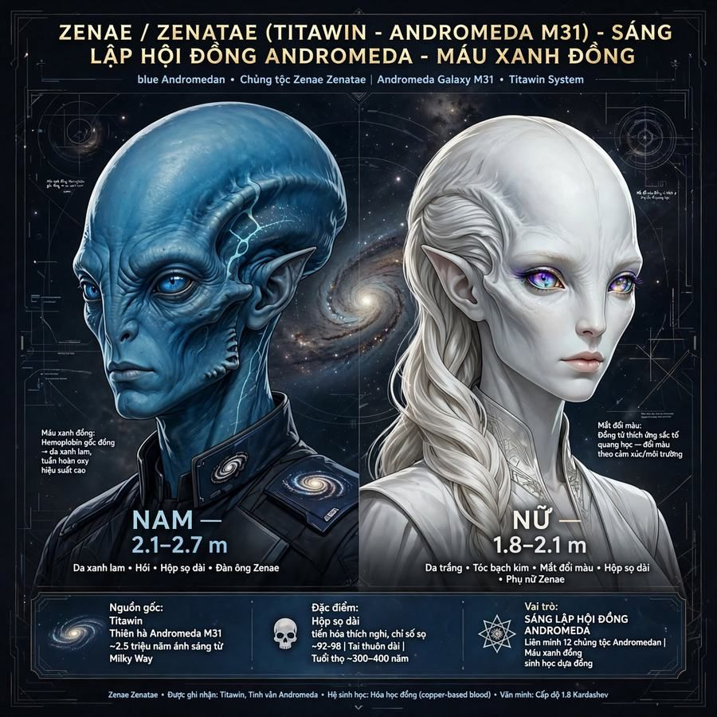
Zygon (Hệ sao Groombridge 34 — Andromeda)
- Hình dáng & Chiều cao: Nam cao 2,3m – 2,6m, Nữ cao 2,0m – 2,2m; da xanh lam rất nhạt, hói, mắt xanh pha lê.
- Đặc điểm Sinh học & Giác quan: Hệ hô hấp lọc nitơ. Tuổi thọ 2.000 năm.
- Đặc tính & Vai trò Thiên hà: Hòa bình; sở hữu tàu vàng kim trang nhã.
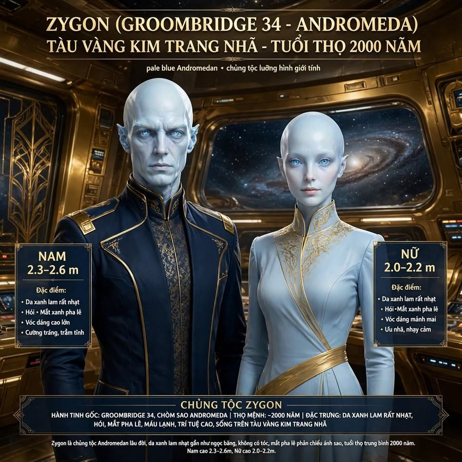
Maytra / Maitre (Thiên hà Megopei — Andromeda Neighbor)
- Hình dáng & Chiều cao: Cao 1,6m – 1,8m; lưỡng tính. Da xám sẫm thô ráp; hộp sọ rất dài, cổ dài nhăn; mắt to đen không lòng trắng.
- Đặc điểm Sinh học & Giác quan: Ký sinh năng lượng sợ hãi và protein động vật. Tuổi thọ 120 năm.
- Đặc tính & Vai trò Thiên hà: Tiêu cực (Chủng tộc xâm lược tàn khốc). Chuyên bắt cóc và tạo robot X5-Tykut.
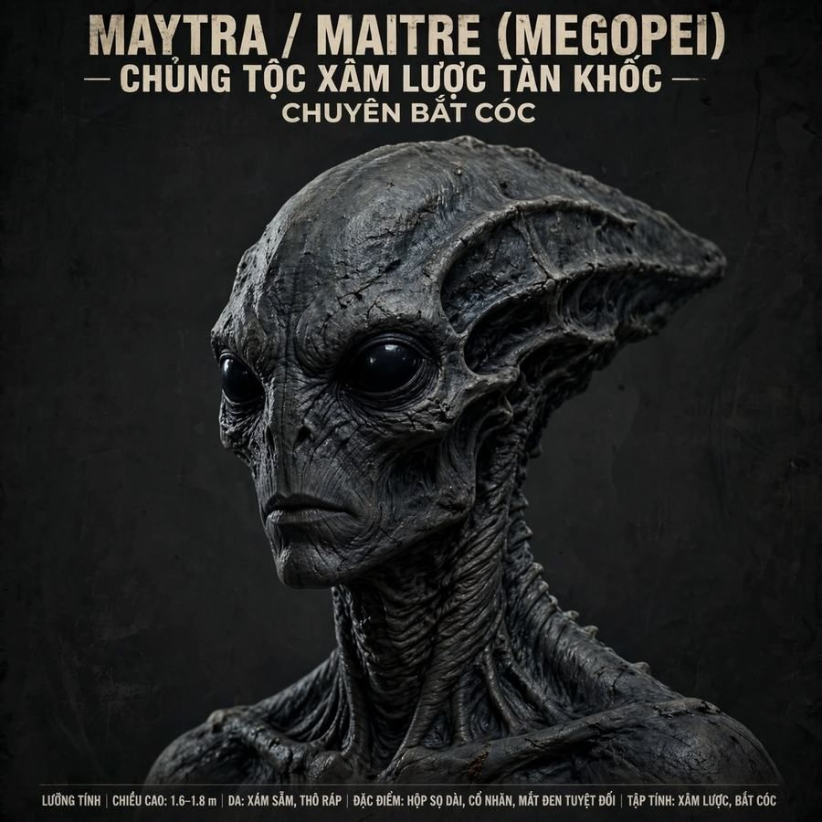
Korendii / Korendians (Hành tinh Korendor — Hệ Korena)
- Hình dáng & Chiều cao: Cao 1,2m – 1,5m; vai rộng, cổ ngắn dày. Da bánh mật; hói, trán nhô; tai nhọn; mắt màu chàm phát sáng rực rỡ.
- Đặc điểm Sinh học & Giác quan: Xương dày gấp 3 lần con người. Chế độ ăn thuần thực vật. Tuổi thọ 800 năm.
- Đặc tính & Vai trò Thiên hà: Hòa bình; thành viên GFW.
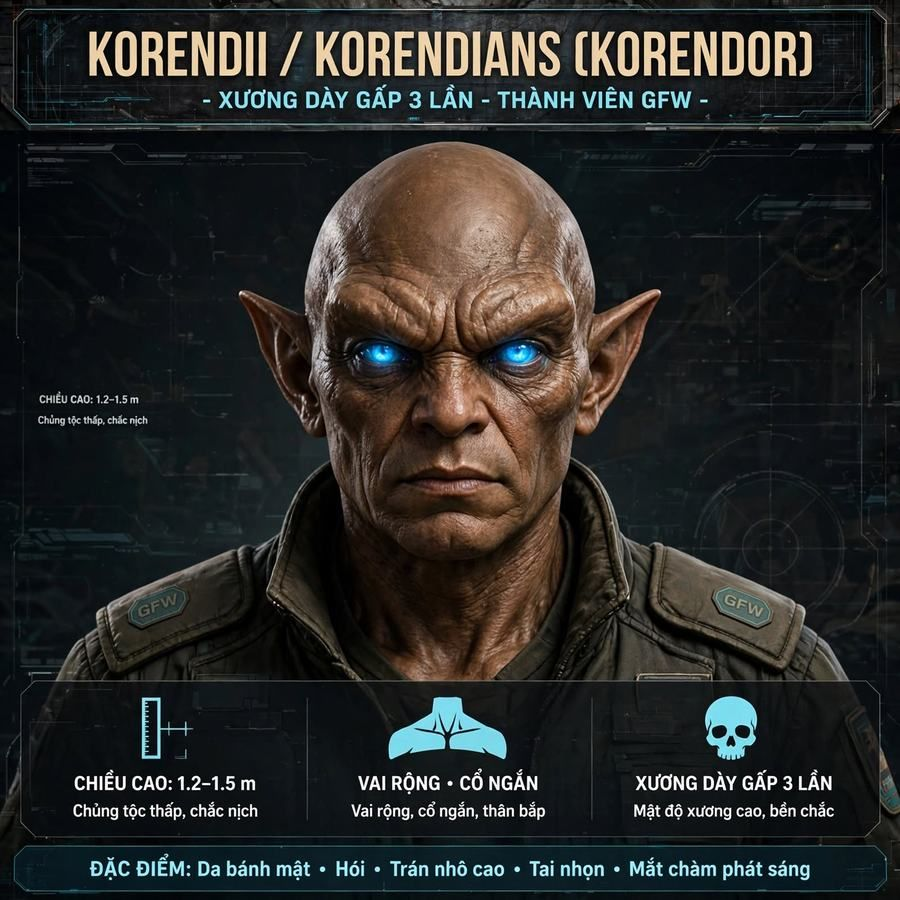
Caraveldi (Chòm sao Chamaeleon)
- Hình dáng & Chiều cao: Đồ sộ cao 3,0m; sở hữu 4 cánh tay cơ bắp; da xám chì thô.
- Đặc điểm Sinh học & Giác quan: Thể lực mãnh liệt. Tuổi thọ 150 năm.
- Đặc tính & Vai trò Thiên hà: Độc lập/Chiến binh; mặc đồng phục xanh đậm.
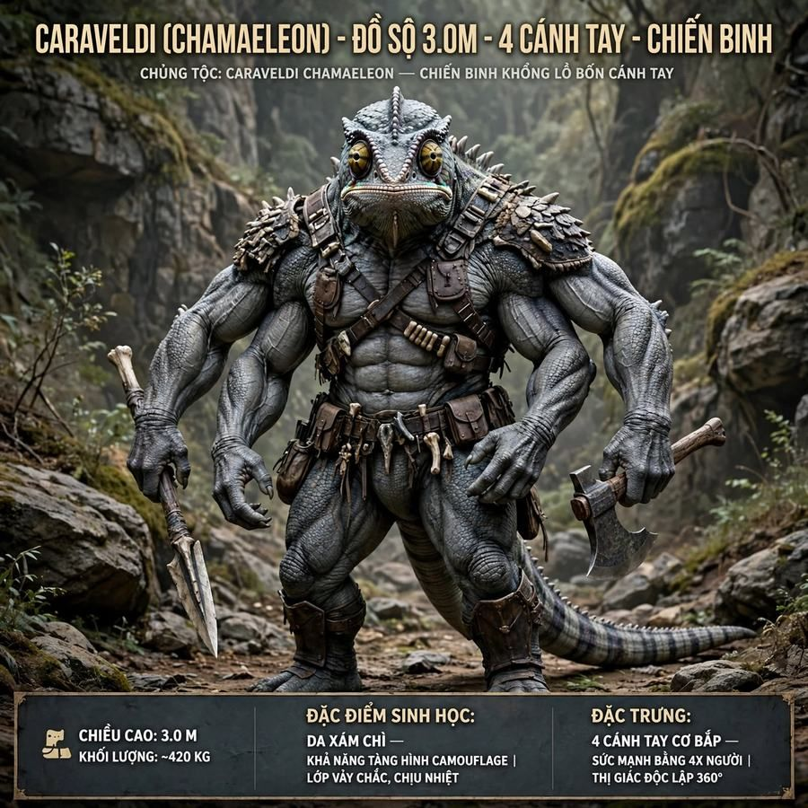
Inextrians (Hệ sao Mirach — Andromeda)
- Hình dáng & Chiều cao: Cao 2,0m – 2,4m; da phát hào quang tím chàm, mắt vàng rực.
- Đặc điểm Sinh học & Giác quan: Mật độ 5D–8D, đi xuyên vật chất.
- Đặc tính & Vai trò Thiên hà: Hòa bình; nghiên cứu đa chiều.
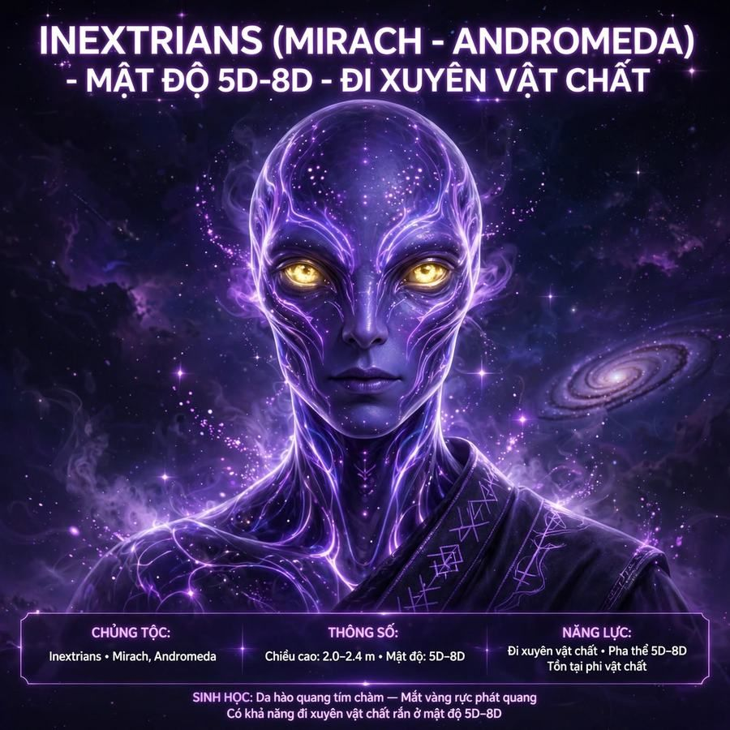
Etherian / Ethera (Hành tinh Etheria — Hệ Maaru)
- Hình dáng & Chiều cao: Cao 2,3m – 2,5m; da trắng mờ như sương tuyết, hộp sọ dài, mắt xếch to.
- Đặc điểm Sinh học & Giác quan: Thể quang năng, vật chất hóa khi cần.
- Đặc tính & Vai trò Thiên hà: Hòa bình; tổ tiên di truyền Kiily-Tokurt.
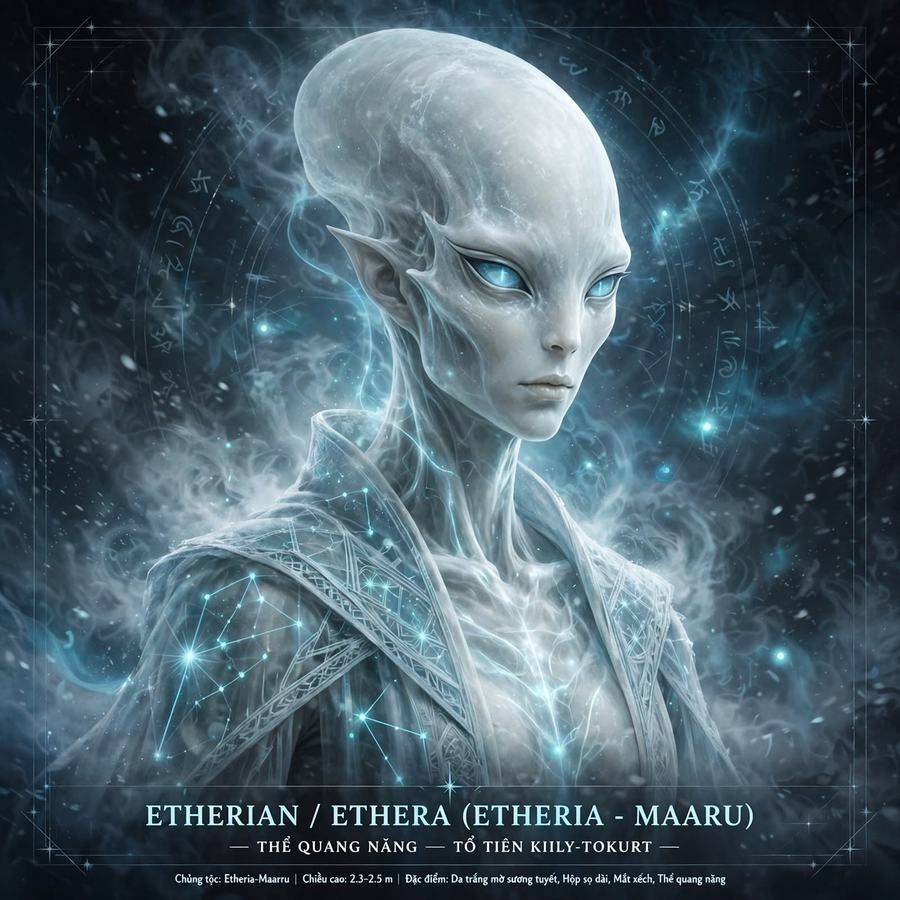
Rak / Raki (Hành tinh Ozmog — Vulpecula)
- Hình dáng & Chiều cao: Cao 1,3m – 1,5m; da xanh lam nhạt, chân da vảy bò sát. Có vô số xúc tu mọc sau đầu.
- Đặc điểm Sinh học & Giác quan: Hệ miễn dịch nhạy cảm. Tuổi thọ 250 năm.
- Đặc tính & Vai trò Thiên hà: Trung lập; nguồn gốc huyền thoại Jinn/Thần đèn.
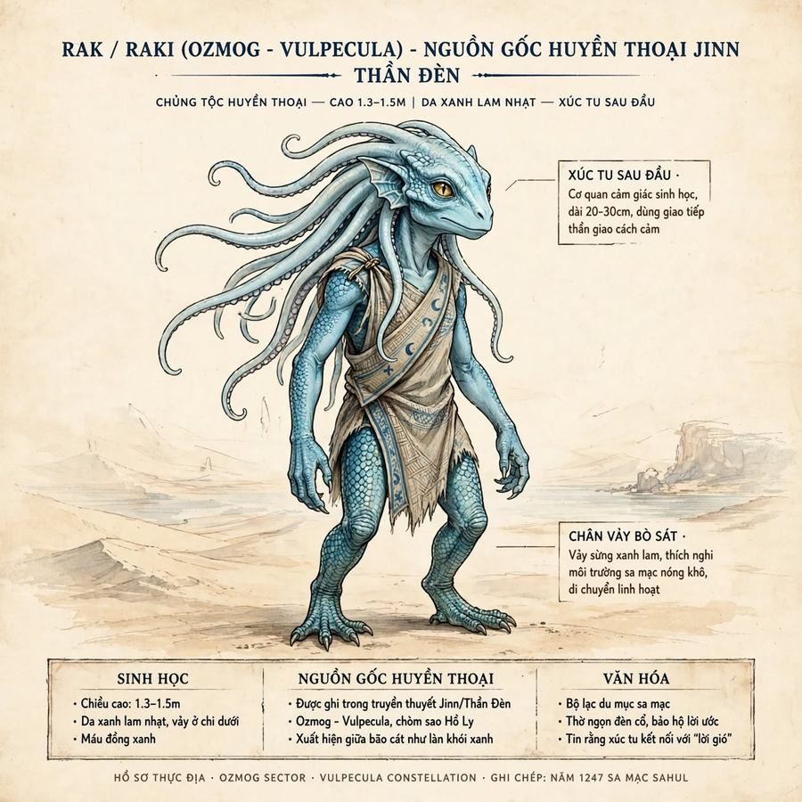
Tisar / Tisari (Hệ sao Tisar — Andromeda)
- Hình dáng & Chiều cao: Cao 1,9m – 2,2m; da trắng lấp lánh như ngọc, lòng bàn tay/chân tự phát quang; tóc bạch kim, mắt bạc.
- Đặc điểm Sinh học & Giác quan: Hô hấp song hành (không khí và dưới nước). Tuổi thọ hàng ngàn năm.
- Đặc tính & Vai trò Thiên hà: Hòa bình; cư dân quần đảo đại dương.
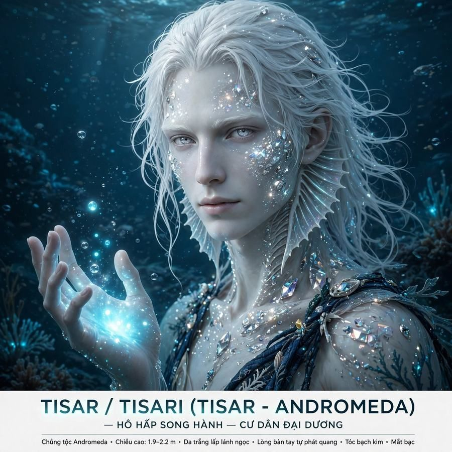
Oshuri / Oshurian (Hệ sao Oshuri — Andromeda 12D)
- Hình dáng & Chiều cao: Không có thể xác vật lý; màng ánh sáng hình học 12D.
- Đặc điểm Sinh học & Giác quan: Tồn tại trong lòng 3 mặt trời Oshuri.
- Đặc tính & Vai trò Thiên hà: Hòa bình; Ý thức sáng tạo tối cao.
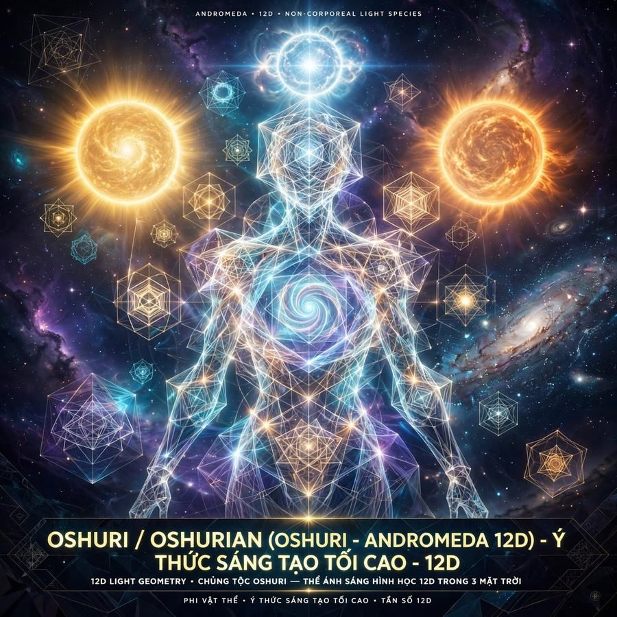
Kiily-Tokurt (Hệ sao Suhail — Vela / Andromeda Hybrid)
- Hình dáng & Chiều cao: Cao 1,8m – 2,0m; da trắng nhợt như tuyết. Bậc thầy biến hình nhưng mắt to đen obsidian bóng cố định.
- Đặc điểm Sinh học & Giác quan: Lai Bò sát - Xám dĩ thái, đẻ trứng.
- Đặc tính & Vai trò Thiên hà: Tiêu cực; chuyên bắt cóc buôn bán nô lệ.
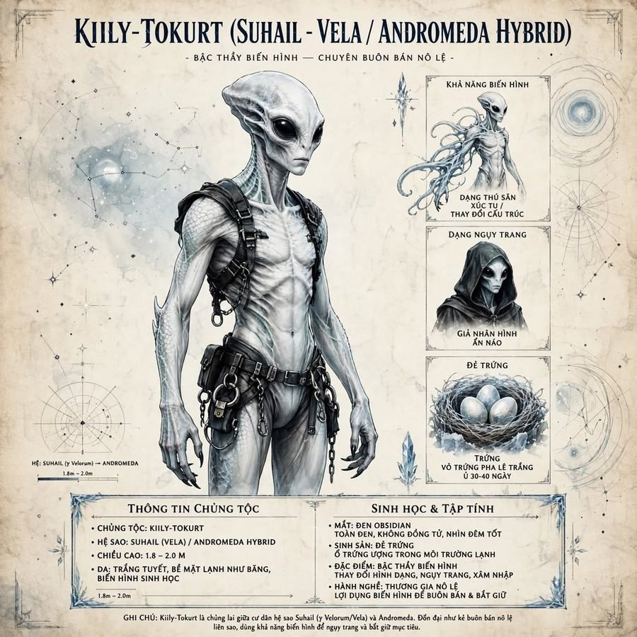